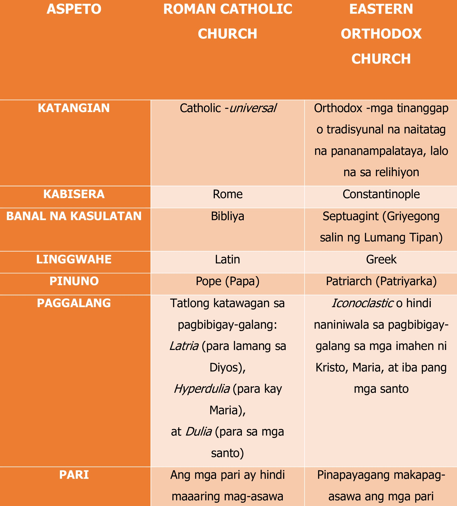
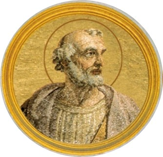
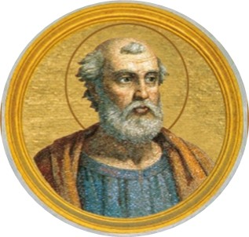
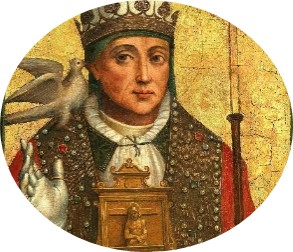
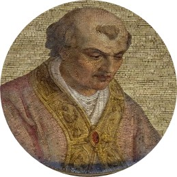
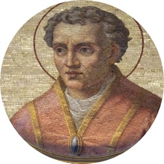

Matapos ang hindi mabilang na pag-uusig sa mga sinaunang Kristiyano, dumating din ang panahon na malaya nilang isabuhay ang kanilang pananampalataya. May ilang mahahalang pangyayari ang nagbigay daan sa paglakas ng Simbahang Katoliko
Nagsimula kay Constantine the Great nang ipatupad niya ang Edict of Milan na nagpapahinto sa pag-uusig sa mga Kristiyano at nagbigay pahintulot sa Kristiyanismo at iba pang relihiyon sa Imperyong Roman noong 313 AD. Ito ay dahil sa pangitaing krus na nakita niya sa kalangitan bago sila nakipaglaban sa Tulay ng Milvian noong 312 AD.
Samantala, ipinagbawal ni Theodosius I ang lahat ng mga paganong relihiyon at ginawang opisyal na relihiyon ng imperyo ang Kristiyanismo. Pinalakas niya ang kapapahan (papacy) sa pamamagitan ng First Council at Constantinople kung saan napili ang Rome bilang pangunahing Diocese at ang Obispo ng Rome ang pinakamataas na pinuno ng Simbahang Romano Katoliko. Pangalawa lamang dito ang Constantinople.
Napagtagumpayan din ng simbahan ang ilang mga kontrobersya o heresy patungkol sa ilang mga turo nito. Ang heresy ay mga doktrinang pangrelihiyon na taliwas sa mga turo ng simbahan. Isa na diyan ang Arianism na kung saan itinuturo ni Arius na si Kristo, kahit na Anak ng Diyos ay hindi ganap ang kanyang kabanalan katulad ng sa Diyos Ama. Ipinatawag ang First Ecumenical Council at Nicaea noong 325 AD upang ayusin ang sigalot at ginamit ang “Nicene Creed” na nagpapatunay sa kabanalan ni Kristo. Gayundin ang Nestorianism na sinasabi ni Nestorius, isang Mongheng Syrian at Patriarch ng Constantinople na si Hesus ay may dalawang katangian – tao at banal. Sinabi rin niya na si Maria ay tao kung kaya’t hindi siya maaaring maging Ina ng Diyos. Ipinatigil ng Third Ecumenical Council at Ephesus ang kontrobersyang ito noong 431 AD. Panghuli, ang Monophysitism na nagsasabi na iisa lamang ang katangian ni Kristo – pagiging banal. Pinagtibay ito sa hindi opisyal na ecumenical council sa Ephesus noong 449 at idineklarang heresy ni Papa Leo I. Ang Fourth Ecumenical Council at Chalcedon noong 451 ang nagdeklara na ito ay hindi katanggap-tanggap.
Dahil sa mga pangyayaring ito, lalong lumaganap ang Kristiyanismo hindi lamang sa nasasakupan ng Imperyong Roman kundi pati sa Scandinavia, dulong bahagi ng Asya, at Silangang Africa.
Ang Kanlurang Europa ay pinamunuan ng Roman Catholic Church kung saan ang sentro nito ay sa Rome. Ilan sa mga tagumpay nito ang pagbibinyag kay Clovis at sa mga Frank, ang mga Irish (sa pamumuno ni St. Patrick), at ang mga Anglo at Saxon sa England (sa pamumuno ni St. Augustine ng Canterbury).
Sa Silangang Europa naman nakilala ang Greek Orthodox Church na ang sentro ay nasa Constantinople. Sila ang nakahikayat sa mga Serb, Bulgar, at Russian na maging Kristiyano.
Pagkakahati ng Simbahang Kristiyano
Sa unang bahagi ng panahon ng mga Kristiyano, nagkaroon ng tunggalian ang Rome at Constantinople para sa kapangyarihan sa relihiyon. Ang Papa o Obispo ng Rome ay inangkin ang kataas-taasang kapangyarihan sa buong simbahan. Samantala, ang Patriarch o Obispo ng Constantinople ay iginiit nito ang kanyang kapangyarihan sa mga usapin ng simbahan sa Silangan. Maliban dito, mayroon din silang magkaibang wika na ginagamit, paniniwala, at mga ritwal. Dahil sa hindi naayos ang kanilang hindi pagkakaunawaan, nahati ang Simbahang Kristiyano noong 1054. Ang Roman Catholic Church na ang sentro ay sa Rome at ang Greek Orthodox Church na ang sentro ay nasa Constantinople. Bagaman ang dalawa ay parehong tagapagtaguyod ng kristiyanismo, ay mayroon itong mga pagkakaiba.

Paglakas ng Kapapahan
Matapos bumagsak ang Rome, ang Obispo ng Rome ay naging makapangyarihang pinuno at pinaniniwalaang sila ang humalili sa mga Caesar ng Rome. Ang kapangyarihang ito ay mas kilala sa katawagang Kapapahan (Papacy).
Dalawa ang pinagbabatayan ng kapangyarihang ito: una, ang kapangyarihan ng Papa na minana mula kay San Pedro Apostol, ang unang Obispo ng Rome na ayon sa Doktrinang Petrine; pangalawa, ang lungsod ng Rome, kahit matapos ang pagbagsak ng Kanlurang Imperyong Roman ay nananatiling sentro ng Kristiyanismo.
Ang Kapapahan (Papacy) ay ang tanggapan at ang nakasaklaw sa Obispo ng Rome. Ang papa (mula sa salitang Latin na papa na ibig sabihin ay “ama”) ang namumuno sa Simbahang Romano Katoliko. Ang katagang pope ay orihinal na tumutukoy sa lahat ng mga Obispo sa Kanluran at sa patriarch ng Alexandria. Subalit noong 1073, nilimitahan ni Papa Gregory VII ang paggamit nito at ginawa para lamang sa Obispo ng Rome.
Nakatulong sa pagpapalakas ng pundasyon ng Simbahang Katoliko Romano at Kapapahan ang maraming mga naging pinuno nito. Ilan lamang sa kanila ay ang sumusunod.

Papa Leo
The Great

Papa Gelasius I

Papa Gregory
The Great

Papa Nicholas II

Papa Gregory VII
Estruktura ng Simbahang Katoliko
Higit na maging maimpluwensiya ang Roman Catholic Church sa Kanlurang Europa dahil na rin sa kawalan ng makapangyarihang kaharian o imperyo. Samantala, ang Silangang Imperyong Roman kung saan naroon ang Greek Orthodox Church ay nagpapatuloy sa ilalim ng mga emperador ng Byzantine kung kaya’t kontrolado ang kapangyarihan nito.
Katulad ng mga hari, ang Simbahang Katoliko ay mayroong hierarchy o pamunuan ng simbahan.
Papa
Kardinal
Arsobispo
Pari
Kasama sa istruktura ng Simbahang Katoliko ang mga lalaki at babaeng mas pinili na humiwalay sa kanilang kinagisnang buhay at pumasok sa mga ordeng panrelihiyon. Ang bawat order o orden ay namumuhay ayon sa mga natatanging hanay ng mga patakaran na kung tawagin ay regula. Samakatuwid, sila ay kilala rin sa tawag na mga paring regular. Ang mga miyembro nito ay nangangako ng tatlong bagay: kahirapan, kalinisang-puri, at pagkamasunurin. Ang mga kalalakihan ay kalimitang tinatawag na mga monghe at prayle habang ang mga babae naman ay tinatawag na madre. Naninirahan sila sa mga gusaling tinatawag na monasteryo. Ilan sa mga kilalang monastaryo ay ang Monastaryo ng Monte Cassino sa Italy, Iona sa Ireland, at Cluny sa Burgundy. Ang pagkakatatag ng mga monastaryo ay nagdulot sa pagsisimula ng kilusang pangrelihiyon na monastisismo. Ang monastisismo ay tumutukoy sa buhay ng pagtatanggi sa sarili at pamumuhay mag-isa o nakahiwalay sa nakararami upang ipagdasal ang kaligtasan ng kaluluwa ng tao.
Ang Paglunsad ng mga Krusada
Habang marami ang nagaganap sa Europa, mayroong malaking pangyayari ang naganap sa Asya na ikinagulat ng mga Kristiyano sa Europa, ang pagbagsak ng Banal na Lupain sa kamay ng mga Turkong Muslim partikular na ang sinasabing paglapastangan sa Banal na Libingan ni Hesus at pagpaslang sa mga Kristiyano roon.
Inilunsad ang isang ekspedisyong militar na binubuo ng mga Kristiyanong kabalyero upang mabawi ang Banal na Lupain sa kamay ng mga Muslim at nakilala ito sa kasaysayan bilang krusada.
Ang salitang krusada ay nagmula sa salitang Latin na “crux” na nangangahulugang “cross”. Ibig sabihin, ang mga Krusador ay nagtataglay ng simbolo ng Krus sa kanilang kasuotan. Sa kabuuan, mayroong siyam (9) na krusada ang nailunsad mula 1095 hanggang 1291.
MGA PANGUNAHING KRUSADA
MGA MALILIIT NA KRUSADA
Unang Krusada (1095-1099)
Krusada ng mga Bata(1212)
Ikalawang Krusada (1147-1149)
Ikalimang Krusada (1217-1221)
Ikatlong Krusada (1189-1192)
Ikaanim na Krusada(1228-1229)
Ikaapat na Krusada (1202-1204)
Ikapitong Krusada(1248-1250)
Ikawalong Krusada(1270)
Resulta ng mga Krusada
Nasundan pa ng ibang krusada noong 1217, 1228, 1248, at 1270 ngunit pawang bigo ang mga ito na mabawi ang Banal na Lupain sa kamay ng mga Turkong Muslim maliban sa Unang Krusada. Nahawakan nila ang Jerusalem sa loob ng isang daang taon at pagkatapos muli itong naagaw ng Turkong Muslim.
Kung mayroon mang magandang bunga ang Krusada, ito ay sa larangan ng kalakalan na nagsilbing salik sa pag-unlad ng mga lungsod at malalaking daungan. Napalawak din ang kulturang Kristiyano.
Samantala, ibinunyag ng krusada ang tunay na mga hangarin ng mga sumali sa gawaing ito. Ang pagkakataong makapaglakbay at mangalakal, at hindi pagmamalasakit sa simbahan ang naging dahilan sa pagsama sa banal na laban.
Kamusta ang iyong paglalakbay sa ating tatlong aralin? Kung gayon ay atin nang simulan ang pagwawakas ng ating paglalakbay, hinahamon kita na lagpasan mo ang iyong huling pagsubok, ang Pangwakas na Pagsusulit!